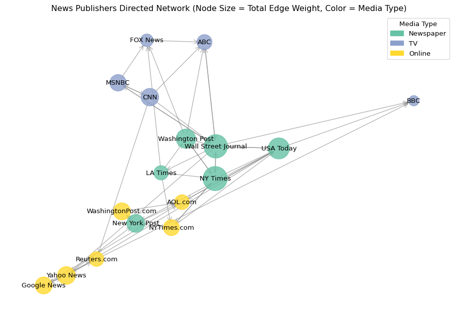

C:\Users\darwh\OneDrive\Documents\.virtualenvs\r-reticulate\Scripts\pythonw.exeInformation Sources Network Analysis
Imagine a world where the only information you received came from your local community. Anything beyond it would take days, weeks, or might never reach you at all. Contrast that with today, where global news is instantly available across countless channels and formats.
If you like to read, you can choose from blogs, magazines, journals, newspapers, and social media. If you prefer visuals, there’s television, YouTube, and short-form video. If you prefer listening while commuting or multitasking, there’s radio and podcasts. With such variety, it feels like there’s no excuse for being uninformed.
But when we step back and look at information as a network, one question becomes central: which sources are mentioned most often as providers of news? Are newspapers still cited more frequently? Do television stations dominate? Or are online platforms emerging as the most prevalent sources?
That’s what we aim to uncover by exploring our information network datasets.
Data exploration
Nodes DataFrame shape: (17, 5)
Nodes DataFrame head:
id media media.type type.label audience.size
0 s01 NY Times 1 Newspaper 20
1 s02 Washington Post 1 Newspaper 25
2 s03 Wall Street Journal 1 Newspaper 30
3 s04 USA Today 1 Newspaper 32
4 s05 LA Times 1 Newspaper 20
Edges DataFrame shape: (51, 4)
Edges DataFrame head:
from to weight type
0 s01 s02 10 hyperlink
1 s01 s02 12 hyperlink
2 s01 s03 22 hyperlink
3 s01 s04 21 hyperlink
4 s04 s11 22 mentionSo, as we can see, the nodes dataframe provides details about news sources, including their media type and audience size. The edges dataframe contains directed connections between sources, with weights indicating the strength of the relationship and the type of reference (such as a hyperlink or mention). Lets create our network.
Directed network created.
Number of nodes: 17
Number of edges: 48
Centralities
We can try understand how central a source is by how of often other nodes refrence it, to do this we can calculate diffrent centralites.
| Metric | Layman’s Definition |
|---|---|
| Degree Centrality | How many direct connections a source has to others (both incoming and outgoing). |
| In-Degree Centrality | How often a source is referenced or cited by others. |
| Out-Degree Centrality | How often a source references or cites other sources. |
| Betweenness Centrality | How often a source acts as a bridge connecting other sources in the network. |
| Closeness Centrality | How quickly a source can reach all other sources in the network (lower distance means higher value). |
media type.label degree_centrality in_degree_centrality \
2 Wall Street Journal Newspaper 0.8125 0.3750
3 USA Today Newspaper 0.5625 0.2500
0 NY Times Newspaper 0.5000 0.2500
1 Washington Post Newspaper 0.3750 0.1250
7 New York Post Newspaper 0.3750 0.2500
14 Yahoo News Online 0.3750 0.1875
6 NYTimes.com Online 0.3125 0.1250
8 AOL.com Online 0.3125 0.2500
5 LA Times Newspaper 0.3125 0.0625
13 CNN TV 0.3125 0.0625
out_degree_centrality betweenness_centrality closeness_centrality
2 0.4375 0.529167 0.453629
3 0.3125 0.389583 0.484914
0 0.2500 0.100000 0.351562
1 0.2500 0.024306 0.265330
7 0.1250 0.084722 0.426136
14 0.1875 0.139583 0.453629
6 0.1875 0.023611 0.265330
8 0.0625 0.243750 0.426136
5 0.2500 0.068750 0.319602
13 0.2500 0.007639 0.242457 As we can see there is top spot in the dataset is always claimed by a news paper for centality meausres but we see online resources also well represented especially for betweeness centrality lets look at aggregats for the entire network.
Average centrality measures by media type:
degree_centrality in_degree_centrality out_degree_centrality \
type.label
Newspaper 0.489583 0.218750 0.270833
Online 0.281250 0.145833 0.135417
TV 0.275000 0.162500 0.112500
betweenness_centrality closeness_centrality
type.label
Newspaper 0.199421 0.383529
Online 0.084491 0.353684
TV 0.030972 0.334240 As we can see, newspaper entities dominate the network in terms of centrality measures. They play a key role in spreading reliable information and are also the media type most frequently citing other sources. Given the long-standing principles of journalism and the fact that newspapers have been the most widely accepted method of information dissemination for the past 200 years, this finding makes sense.
However, online sources are becoming increasingly prevalent—especially when we consider how young the internet is. With updated data, we may see a shift in dominance, particularly given the growing influence that social media has on human interactions today.